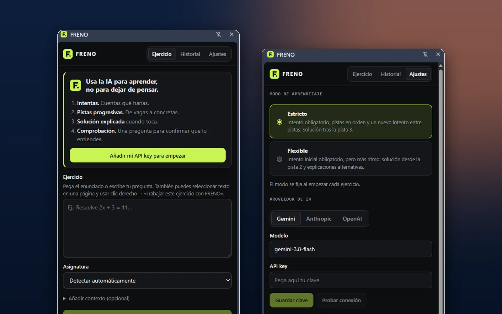
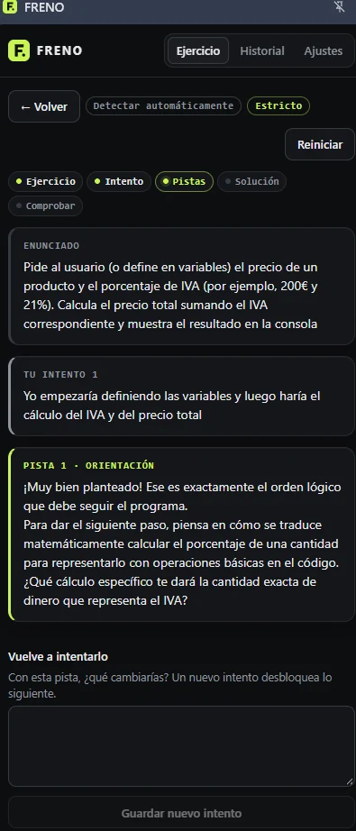
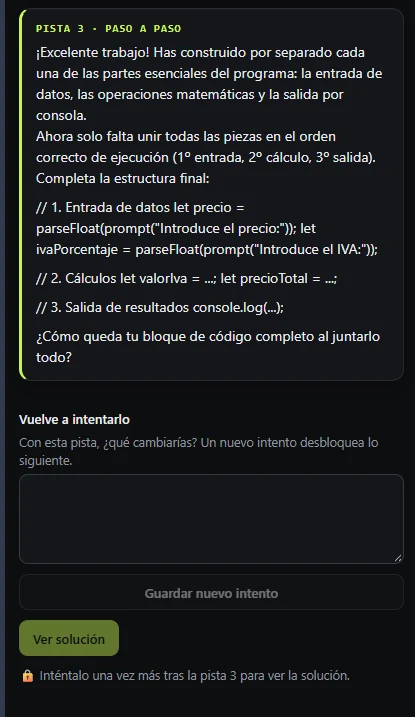
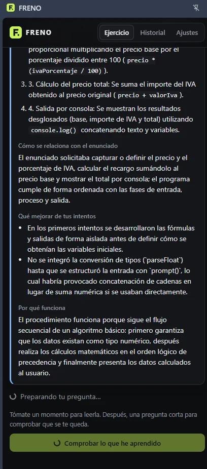
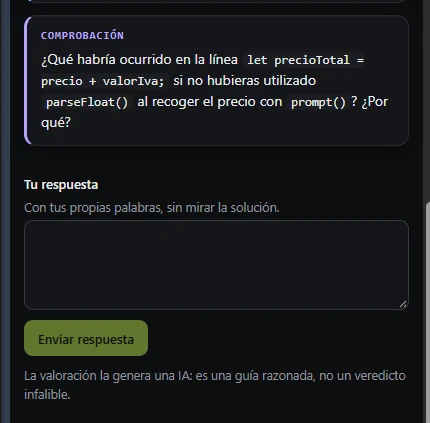
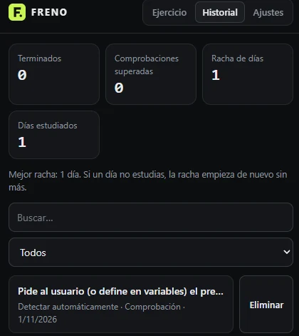
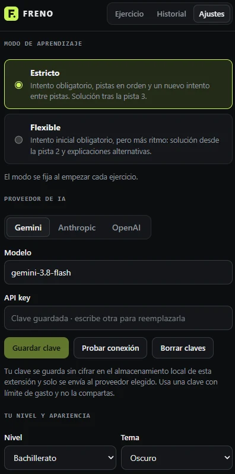

Freno AI
Tutor con IA en el panel lateral de Chrome que pide tu intento antes de dar pistas y solo da la solución cuando el método lo permite. El orden lo impone la aplicación, no el modelo.

El problema
Un asistente de IA puede dar la respuesta a la primera, y eso es justo lo que puede evitar que el estudiante piense.
La necesidad
Al estudiar con IA es fácil pedir el resultado y copiarlo. Se avanza en la tarea, pero se aprende poco. Es una preocupación habitual en educación, aunque este proyecto no ha medido su alcance.
Qué propone Freno AI
Un tutor que impone un método: primero tu intento, después pistas progresivas, solo entonces la solución explicada y, al final, una pregunta corta para comprobar que se ha entendido.
La solución
El recorrido de un ejercicio, de principio a fin. Cada paso se desbloquea según reglas de la aplicación.
- Planteas el ejercicioLo pegas en el panel o seleccionas el texto en cualquier web y eliges «Trabajar este ejercicio con FRENO» con el botón derecho.
- Escribes tu intentoEs obligatorio y debe tener contenido real, aunque sea breve o incompleto: no se juzga el esfuerzo por la longitud.
- Recibes pistas progresivasDe una orientación vaga a una ayuda paso a paso. Entre pistas hay que volver a intentarlo.
- Se desbloquea la soluciónExplicada, conectada con el enunciado y con los fallos concretos de tus intentos.
- Respondes a una comprobaciónUna pregunta breve sobre el concepto, con una valoración razonada que no es un veredicto infalible.
- Queda en tu historialCon estadísticas de progreso guardadas en tu navegador.
Funcionalidades
Lo que hace la extensión en su versión actual (MVP 0.1).
Intento primero
La primera pista permanece bloqueada hasta que escribes un intento. La solución no se pide al modelo hasta que las reglas lo permiten.
Tres niveles de pista
Orientación, ayuda concreta adaptada a tu intento y orientación paso a paso, sin entregar el resultado.
Modo estricto y flexible
Estricto: pistas en orden, nuevo intento entre pistas y solución tras la tercera. Flexible: más ritmo, con solución desde la pista 2. El modo se fija al empezar cada ejercicio.
Solución explicada
Pasos, relación con el enunciado, qué mejorar de tus intentos y por qué funciona. Indica si el resultado está verificado o hay dudas.
Pregunta de comprobación
Una pregunta distinta del enunciado. Con una valoración correcta, parcial o incorrecta, y una pista si falla.
Funciona en cualquier web
Menú contextual sobre el texto seleccionado que abre el panel lateral con el ejercicio ya cargado.
Tu propio proveedor de IA
Gemini, Anthropic u OpenAI con tu clave, modelo editable y botón «Probar conexión». Reintenta solo los errores transitorios.
Historial y estadísticas
Ejercicios terminados, comprobaciones superadas, racha y días estudiados, con búsqueda, filtro y borrado.
Nivel y apariencia
Nivel académico (ESO, Bachillerato, Universidad) que adapta las explicaciones, y tema oscuro, claro o automático.
Capturas reales
Una sesión con un ejercicio de programación (calcular un precio con IVA), con Gemini como proveedor.






Arquitectura y tecnologías
La lógica pedagógica vive en código propio y probado. El modelo de IA solo redacta pistas y explicaciones cuando la aplicación se lo pide.
- Panel lateralInterfaz en React
- Reglas de etapa¿Está desbloqueada la pista o la solución?
- Proveedor de IAGemini, Anthropic u OpenAI con tu clave
- ValidaciónLa respuesta debe cumplir el esquema esperado
- chrome.storage.localEjercicio, historial y ajustes
- core/Dominio puro y sin red: tipos, máquina de etapas (qué se puede pedir en cada momento) y estadísticas.
- ai/Construcción de los prompts por etapa, cliente de los tres proveedores, validación de las respuestas y orquestación del tutor.
- sidepanel/Interfaz React del panel lateral: ejercicio, historial y ajustes.
- background.tsService worker que abre el panel lateral y crea el menú contextual para el texto seleccionado.
- storage.tsÚnico acceso a
chrome.storage: todo enlocal, salvo el texto pendiente del menú contextual, que va asession. - Compilaciónesbuild genera
dist/con el panel, el service worker y el manifest. Con una CSP de extensión estricta (script-src 'self').
Privacidad y claves de API
Freno AI no tiene servidores propios, pero tampoco es un sistema cerrado: para funcionar envía tu ejercicio al proveedor de IA que elijas.
Qué permanece en tu navegador
- Ajustes, nivel, tema y modo de aprendizaje
- Ejercicios, intentos, pistas, soluciones e historial
- Estadísticas y racha
- Tus claves de API
Todo se guarda en chrome.storage.local. No hay cuenta, servidor propio ni analítica.
Qué se envía al proveedor elegido
- Tu nivel académico y la asignatura detectada
- El enunciado (hasta 6000 caracteres) y el contexto opcional (hasta 2000)
- Tus intentos y las pistas ya dadas
- En la comprobación, la solución mostrada y tu respuesta
No se envía tu historial anterior ni la URL de la página; solo se envía lo del ejercicio que estás trabajando, y únicamente al proveedor seleccionado.
Gemini (Google)
Destino: generativelanguage.googleapis.com. La clave viaja en la cabecera x-goog-api-key, no en la URL.
Anthropic
Destino: api.anthropic.com. La clave viaja en la cabecera x-api-key.
OpenAI
Destino: api.openai.com. La clave viaja en la cabecera Authorization.
storage, sidePanel y contextMenus, y acceso solo a los tres dominios de los proveedores, sin content scripts.Retos técnicos
El reto central era que la IA no pudiera saltarse el método que la propia aplicación impone.
Que mande la aplicación, no el modelo
Las reglas de etapa deciden antes de llamar a la IA qué se puede pedir. Una prueba comprueba que, con la etapa bloqueada, el proveedor ni siquiera se consulta, y otra que un error de la IA no hace avanzar de etapa.
Enunciados que intentan manipular al tutor
El texto del ejercicio se delimita con etiquetas y se neutralizan las que intenten cerrarlas. El modelo recibe además la indicación de tratarlo como datos. Una prueba cubre ese caso.
Respuestas de IA impredecibles
Se piden en JSON y se validan contra un esquema. Una respuesta inválida se reintenta una vez; si vuelve a fallar, se muestra un error y la etapa no avanza.
Tres proveedores, tres formatos
Cada uno tiene su cuerpo de petición y su autenticación. Los errores se clasifican (clave, límite, red, tiempo, servidor) y los transitorios se reintentan con espera, con un tiempo máximo de 60 s por llamada.
Modelos que «piensan»
En Gemini se amplía el margen de tokens de salida para que el razonamiento interno no corte el JSON de la respuesta.
Abrir el panel desde el menú contextual
El texto seleccionado se guarda un momento en almacenamiento de sesión y el panel lo recoge al abrirse, de modo que el ejercicio llega ya cargado.
Resultados y pruebas
Lo que se ha ejecutado y qué cubre cada tipo de prueba.
fetch simulado. El E2E se ejecuta en Chromium con la extensión cargada y una API simulada de Anthropic, sin red ni claves. No hay pruebas automáticas con llamadas reales a Gemini, Anthropic ni OpenAI, y no hay prueba E2E con Gemini. Las capturas corresponden a un uso real con Gemini. La calidad pedagógica de las pistas no se ha validado con estudiantes.Estado y próximos pasos
Estado actual
MVP 0.1 para uso local. No está publicado en Chrome Web Store: se instala compilando el proyecto y cargando dist/ en modo desarrollador.
Limitaciones conocidas
- Es fricción educativa, no un bloqueo: se puede saltar usando otra pestaña
- Una pista puede revelar más de lo deseado
- La valoración de la comprobación la genera una IA y puede equivocarse
- Las claves están en el navegador, sin cifrar
Posibles mejoras (no implementadas): validar las pistas con estudiantes reales, comprobar tipos reales en integración continua y, si el proyecto creciera, mover las claves a un servidor propio.